워드프로세서-(구-1급) (2009-07-19 기출문제)
1과목: 워드프로세싱 일반
1. 다음의 보기와 같은 커서의 위치에서 [Ctrl] 키를 누른 채로 왼쪽 화살표 키를 세 번 누른 결과로 옳은 것은?
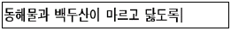
(정답률: 77%)

2. 다음 중 워드프로세서의 하이퍼텍스트(Hyper text)에 대한 설명으로 가장 거리가 먼 것은?
- 문서 내의 특정 단어를 선택하면 지정한 위치로 이동할 수 있다.
- 문서를 작성하는 중에 다른 응용 프로그램의 내용, 그림, 표 등을 항상 참조할 수 있다
- 한 하이퍼텍스트에서 다른 페이지로의 연결을 링크(Link)라고 한다
- HTML 문서와 연결하면 인터넷에 곧바로 연결할 수도 있다
(정답률: 60%)
3. 다음중 비트맵 방식과 벡터 방식에 대하여 설명한 것으로 옳은 것은?
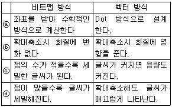
- ⓐ
- ⓑ
- ⓒ
- ⓓ
(정답률: 75%)
4. 다음 중에서 캐시 메모리(Cache Memory)에 관한 설명으로 옳지 않은 것은?
- 데이터의 손실이나 훼손에 대비하여 프로그램 또는 데이터 파일을 복사해 놓는 저장장소이다.
- 중앙처리장치와 주기억장치 사이에서 실행속도를 높이기 위해 사용된다.
- 다른 메모리에 비해 접근속도는 빠르나 값이 비싼 단점이 있다.
- 캐시 메모리는 주로 SRAM으로 만들어 진다.
(정답률: 61%)
5. 다음 중 로드(Load)에 대한 설명으로 가장 적합한 것은?
- 현재 사용중인 디스크드라이버를 말한다
- 주기억장치의 내용을 보조기억장치에 저장한다
- 주기억장치의 내용을 처리한다.
- 보조기억장치에 기억된 내용을 주기억장치로 불러온다.
(정답률: 70%)
6. 다음 중 표시장치에 대한 설명으로 옳지 않은 것은?
- 해상도란 화면표시와 정밀도, 선명도를 나타내는 용어이다.
- 해상도는 화소에 의해 결정되며, 화소수가 많을수록 선명하다.
- 모니터의 주파수 대역폭이 작을수록 화면의 해상도가 증가한다.
- 그래픽카드는 성능이 높을수록 많은 수의 색상을 지원한다.
(정답률: 73%)
7. 다음 중 지시문서로만 짝지어 진 것은?
- 총리령, 대통령령, 지시
- 훈령, 예규, 일일명령
- 조례, 지시, 고시
- 공고, 법률, 부령
(정답률: 61%)
8. 다음은 워드프로세서의 어느 용어에 대한 설명인가?
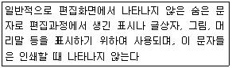
- 와일드카드(Wild Card)
- 조판부호(Control Code)
- 아스키 코드(ASCII Code)
- 유니코드(Unicode)
(정답률: 67%)
9. 다음 중 메일 머지(Mail Merge)의 기능에 대한 설명으로 옳지 않은 것은?
- 본문 파일과 데이터 파일을 작성한다.
- 본문 내용은 같고 수신인이 다양할 때 사용한다.
- 유기적으로 연관된 내용을 찾는 기능이다.
- 안내장, 초대장 등을 작성할 때 용이하다.
(정답률: 73%)
10. 다음은 공문서의 성립 및 효력 발생에 대한 설명이다. 옳지 않은 것은?
- 일반 문서인 경우 수신자에게 도달된 때 효력이 발생한다.
- 공고 문서인 경우는 고시 또는 공고가 있는 후 5일이 경과한 날로부터 효력이 발생한다.
- 문서는 당해 문서에 대한 서명에 의한 결재가 있음으로써 성립한다.
- 전자 문서인 경우에는 작성자의 컴퓨터 파일에 기록된 때부터 효력이 발생한다.
(정답률: 60%)
11. 다음 워드프로세서 용어에 대한 설명 중 옳지 않은 것은?
- 미리보기 기능은 소프트 카피(Soft Copy)의 일종이다.
- 한 페이지 내에서 문단의 길이는 일정하다.
- 클립아트란 문서를 편집할 때 간단히 삽입할 수 있는 조각그림의 모임이다.
- 디더링이란 요구된 색상을 사용할 수 없을 때 다른 색을 섞어 비슷한 색상을 만들어 내는 기법이다.
(정답률: 55%)
12. 다음 중 전자출판에 사용되는 용어에 관한 설명으로 옳은 것은?
- 오버프린트(Over Print) : 대상체의 컬러가 배경색의 컬러보다 옅을 때 발생하는 현상이다.
- 스프레드(Spread) : 사진이나 그래픽 이미지를 문서의 바탕에 투명하게 인쇄하는 현상을 의미한다.
- 리터칭(Retouching) : 기존의 그림을 다른 형태로 새롭게 변형, 수정하는 작업을 의미한다.
- 필터링(Filtering) : 3차원 그래픽 작업의 한 과정으로 2차원직인 이미지에 음영과 채색을 적절히 주어 3차원적인 입체감을 극대화하는 작업을 의미한다.
(정답률: 66%)
13. 다음 중 맞춤법 검사(Spell Check) 기능에 대한 설명으로 옳지 않은 것은?
- 문서 작성중 잘못 입력된 단어를 찾은 기능이다.
- 한글뿐만 아니라 영문에 대해서도 검사할 수 있다.
- 맞춤법 검사는 검사를 할 때마다 새로운 오류를 찾아주므로 자주 실행하는 것이 좋다.
- 흔히 틀리는 단어에 대해서는 맞춤법 검사없이 자동적으로 이를 수정하도록 지정할 수 있다.
(정답률: 66%)
14. 다음은 공문서의 “끝”을 표시하는 방법을 설명한 것이다. 옳지 않은 것은?
- 본문이 끝났을 경우에는 1자(2타) 띄우고 “끝”자를 표시한다.
- 첨부물이 있는 경우에는 붙임의 표시문 끝에 1자(2타) 띄우고 “끝”자를 표시한다.
- 본문 내용 또는 붙임의 표시문이 오른쪽 한계선에 닿은 때에는 다음 줄의 왼쪽 기본선에서 1자(2타) 띄우고 “끝”자를 표시한다.
- 일괄기안의 경우에는 마지막 안에만 “끝” 자를 표시하면 된다.
(정답률: 53%)
15. 다음 중 소트(Sort)에 대한 설명으로 옳지 않은 것은?
- 한번 정렬된 내용은 오름차순 혹은 내림차순으로 재배열 할 수 있다.
- 작은 것부터 큰 순서대로 정렬하는 것을 오름차순 정렬 이라고 한다.
- 오름차순 정렬을 하면 한글, 영문자, 숫자 순으로 정렬된다.
- 큰 것부터 작은 순서대로 정렬하는 것을 내림차순 정렬이라고 한다.
(정답률: 77%)
16. 다음 중 그래픽 모드의 화면 표시 방식에 대한 설명으로 옳지 않은 것은?
- 픽셀로 문자를 표시한다.
- 위지윅(WYSIWYG) 기능이 지원된다.
- 다양한 글자체가 지원되며 그림도 편집할 수 있다.
- 대부분의 워드프로세서에서 사용되며 텍스트 모드 보다 처리속도가 빠르다
(정답률: 57%)
17. 다음 보기의 내용과 관련이 없는 사항은?
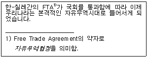
- 각주
- 내어쓰기
- 색인
- 기울임(이태릭체)
(정답률: 56%)
18. 다음 중 전자책(eBook) 작성을 위한 인터넷 정보 표시 언어로 가장 알맞은 것은?
- RFC
- EBKS
- XML
- OEBFS
(정답률: 52%)
19. 다음 중에서 서로 상반되는 의미를 갖는 교정 부호로 짝지어지지 않은 것은?

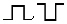

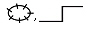
(정답률: 74%)
20. <보기1>의 문장이 <보기2>의 문장으로 수정되기 위해 필요한 교정부로들로만 올바르게 짝지어진 것은?
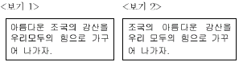
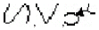
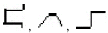
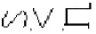
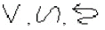
(정답률: 84%)
2과목: PC 운영 체제
21. 한글 Window XP에서 기본 프린터에 관한 설명으로 옳지 않은 것은?
- [프린터 및 팩스] 창에 있는 기본 프린터의 아이콘은 좌측 하단에 화살표가 표시되어 있다.
- 기본 프린터의 아이콘은 바탕화면에 바로가기를 만들수 있다.
- 설치된 여러 프린터 중에서 기본 프린터는 1대만 가능하다.
- 설치된 여러 프린터 중에서 특별한 지정없이 인쇄 작업이 수행되는 프린터를 의미한다.
(정답률: 45%)
22. 한글 Windows XP에서 파일과 폴더의 관리에 관한 설명으로 옳은 것은?
- [탐색기]에서 비연속적으로 위치한 여러 개의 파일을 선택하려면, [Shift] 키를 누른 상태에서 개체를 마우스로 클릭으로 선택하면 된다.
- 같은 드라이브에 있는 파일을 마우스를 사용하여 복사하려면, 원하는 파일을 선택한 후에 [Shift] 키를 누른채 원하는 곳으로 “드래그 엔 드롭”하면 된다.
- [휴지통]에 있는 실행형 파일(*.exe)은 복원될 수 없으며, [제어판]에 있는 [프로그램 추가/제거]을 이용하여 새로이 설치하여야 한다.
- 파일이나 폴더의 이름 바꾸기를 하려면 해당 아이콘의 바로 가기 메뉴에서 [이름 바꾸기]를 선택하거나 [F2]를 누른다.
(정답률: 58%)
23. 한글 Windows XP에서 바로가기 아이콘에 관한 설명으로 옳지 않은 것은?
- 탐색기에서 바로가기 아이콘을 더블클릭하여 실행시키면 바로가기 아이콘과 연결된 실제 실행파일이 실행된다.
- 바로가기 아이콘은 연결된 실제 실행파일과 다른 폴더에 위치할 수 있다.
- 바로가기 아이콘은 실행파일에 대해서만 만들어 진다.
- 바로가기 아이콘을 삭제하더라도 연결된 실제 파일은 삭제되지 않는다.
(정답률: 68%)
24. 다음 중 한글 Windows XP의 [탐색기]창에서 사용할 수 있는 바로가기 키에 관한 설명으로 옳지 않은 것은?
- [Alt]+[Enter] : 선택된 개체에 대한 등록정보를 나타낸다.
- [Backspace] : 현재 폴더의 상위 폴더로 이동한다.
- [Esc] : 선택된 개체의 선택 취소를 한다.
- Numeric Keypad의 [+] : 폴더 목록창에서 표시를 가지고 있는 선택된 폴더의 하위 폴더 목록을 펼쳐서 보여준다.
(정답률: 37%)
25. 한글 Windows XP의 [제어판]에 있는 [글꼴]에 관한 설명으로 옳지 않은 것은?
- 폰트 파일은 C:\Windows\Fonts 폴더에 존재한다.
- 폰트 파일은 FON, TTF, TTC등의 확장자를 갖는다.
- 폰트 파일은 [글꼴] 폴더에 복사하면 해당 글꼴이 시스템에 설치된다.
- 설치된 글꼴은 [제어판]의 [프로그램 추가/제거]를 이용하여 제거한다.
(정답률: 63%)
26. 다음 중 파일 시스템에 대한 설명으로 옳지 않은 것은?
- FAT16 : 파티션 용량이 2GB까지 제한되지만, MS-DOS 및 기타 버전의 Windows 운영체제에서 제한적으로 사용된다.
- FAT32 : FAT에 비하여 보다 작은 클러스터 크기와 더 큰 볼륨을 제공한다.
- NTFS : FAT32 파일 시스템과 비교하여 성능, 보안, 안정성 면에서 고급의 기능을 제공한다.
- Windows XP에서 FAT, FAT32, NTFS등의 상호 변환이 가능하다.
(정답률: 38%)
27. 다음중 한글 Windows XP의 [도움말 및 지원] 기능에 대한 설명으로 옳지 않은 것은?
- 작업 표시줄의 [시작] 메뉴에서 [시작] - [도움말 및 지원]을 선택하여 실행한다.
- 특정 응용프로그램이 실행된 상태에서 [Alt] + [F1] 키를 누르면 해당 도움말이 나타난다.
- 색인 목록을 이용한 도움말의 검색이 가능하다.
- 찾을 키워드 입력 기능으로 도움말을 검색할 수 있다.
(정답률: 57%)
28. 한글 Windows XP의 [보조프로그램]-[엔터테이먼트]에 있는 프로그램에 관한 설명으로 옳은 것은?
- [볼륨조절]을 선택하면 사운드의 볼륨 조절뿐 아니라, 음소거와 밸런스 조정을 할 수 있다.
- [녹음기]는 사운드를 저장만 할 수 있으며, 사운드의 재생은 [Windows Media Player]를 사용해야 한다.
- [Windows Media Player]에서는 다양한 형식의 사운드 파일을 녹음, 재생, 편집할 수 있다.
- [녹음기]에서 사운드를 mp3 형식의 파일로 저장할 수 있다.
(정답률: 41%)
29. 다음 중 한글 Windows XP의 [제어판]에 있는 [내게 필요한 옵션]에 대한 설명으로 옳지 않은 것은?
- <Caps Lock>,<Num Lock>,<Scroll Lock> 키를 누를 때 신호음을 들을 수 있는 [필터키]를 설정할 수 있다.
- 시스템 신호음을 시각적으로 표시하는 [소리 탐지 사용]을 설정할 수 있다.
- 읽기 쉽도록 구성된 색상 및 글꼴을 사용할 수 있는 [고대비 사용]을 설정할 수 있다.
- 프로그램에서 나오는 음성 또는 소리를 화면에 자막으로 표시할 수 있는 [소리표시 사용]을 설정할 수 있다.
(정답률: 40%)
30. 다음 중 한글 Windows XP의 네트워크 환경에서 [네트워크 드라이브 연결]에 관한 설명으로 옳지 않은 것은?
- 연결할 컴퓨터에는 공유 폴더가 존재해야 한다.
- [네트워크 드라이브 연결] 창에서 로그온 할 때 다시 연결 하도록 설정할 수 있다.
- 네트워크 드라이브의 경로를 “컴퓨터이름\\폴더이름”과 같은 형식으로 입력한다.
- 네트워크 드라이브의 문자를 설정할 수 있다.
(정답률: 42%)
31. 다음 중 한글 Windows XP에서 [네트워크 설정 마법사]를 실행하는 과정의 작업으로 옳지 않은 것은?
- 컴퓨터 설명과 컴퓨터 이름의 입력
- 작업 그룹 이름의 입력
- 네트워크 어댑터의 설치
- 파일 및 프린터 공유 사용의 설정
(정답률: 40%)
32. 다음 중 한글 Windows XP에서 하드 디스크 드라이브의 포맷에 관한 설명으로 옳은 것은?
- 디스크 포맷 과정에서 기본적으로 불량섹터를 검사하고 복구한다.
- 하드 디스크 드라이브를 MS-DOS 시동 디스크로 사용 할 수 있다.
- [압축사용]은 NTFS 파일 시스템에만 사용할 수 있다.
- [빠른 포맷] 형식은 하드디스크의 FAT 파일 시스템에서만 사용할 수 있다.
(정답률: 31%)
33. 다음 보기는 한글 Windows XP의 기능에 대한 설명이다. 빈칸에 들어갈 적당한 용어의 순서로 옳은 것은?
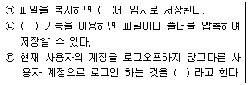
- 클립보드 - 압축폴더 - 사용자전환
- 메인 메모리 - OLE - 대기모드전환
- 클립보드 - 파일압축도구 - 빠른실행
- 가상메모리 - 멀티테스킹 - 사용자전환
(정답률: 74%)
34. 한글 Windows XP의 [시스템 도구]에 있는 [시스템 정보]에 관한 설명으로 옳지 않은 것은?
- 로컬 및 원격 컴퓨터의 시스템 구성 정보를 수집하고 표시한다.
- 서명한 드라이버 및 서명하지 않은 드라이버를 포함한 하드웨어 구성, 컴퓨터 구성 요소 및 소프트웨어에 대한 정보를 포함한다.
- 기본값으로 시스템 정보는 텍스트(.txt) 형식으로 데이터 파일을 저장한다.
- 시스템 정보를 사용하면 기술 지원 담당자가 시스템 문제를 해결하는데 필요한 정보를 빨리 찾을 수 있다.
(정답률: 49%)
35. 한글 Windows XP의 [디스플레이 등록 정보] 창에 있는 각 탭의 기능 및 설명으로 옳지 않은 것은?
- [바탕 화면] 탭에서는 배경 무늬를 선택할 수 있고 표시 위치를 가운데, 바둑판식, 늘이기로 선택할 수 있다.
- [화면 배색] 탭에서는 Windows에서 표현되는 색상 수를 설정할 수 있다.
- [테마]에서는 미리 정의된 백 그라운드 및 소리 그룹, 아이콘 및 기타 요소인 테마를 사용하여 컴퓨터를 사용자가 원하는 스타일로 꾸밀 수 있다.
- [설정]에서는 비디오 카드/드라이버 정보를 볼 수 있다.
(정답률: 32%)
36. 다음 중 한글 Windows XP의 문서 편집기인 [메모장]에 관한 설명으로 옳은 것은?
- 그림, 동영상 등의 개체를 삽입하는 OLE 기능을 지원한다.
- 서식이 표시되지 않기 때문에 웹 페이지용 HTML 문서를 작성할 수 있다.
- 작성된 문서를 다른 사람에게 전달하는 편지 보내기를 실행할 수 있다.
- *.RTF, *.PDF 등의 형식으로 파일 저장이 가능하다.
(정답률: 45%)
37. 한글 Windows XP에서 메모리가 부족하여 프로그램을 실행할 수 없는 경우의 해결 방안으로 가장 올바르지 않은 것은?
- 불필요한 프로그램을 종료하고 해당 프로그램을 다시 실행한다.
- [시작프로그램] 폴더에 있는 불필요한 프로그램을 삭제하고 시스템을 재시작한다.
- [디스크 검사]를 실행하여 디스크 공간을 늘린다.
- [가상 메모리] 크기를 적절히 설정한다.
(정답률: 46%)
38. 한글 Windows XP의 [작업 표시줄]에 관한 설명으로 옳지 않은 것은?
- 마우스 끌어놓기 작업으로 [작업 표시줄]의 위치는 화면의 상하좌우 원하는 곳으로 변경할 수 있다.
- [작업 표시줄]에 있는 알림영역에 시계 표시를 할 수 있다.
- [작업 표시줄]에는 실행 중인 프로그램들이 단추 형식으로 표시된다.
- [작업 표시줄]에 [시작] 단추가 표시되지 않도록 설정할 수 있다.
(정답률: 58%)
39. 한글 Windows XP에서 프린터에 관한 설명으로 옳지 않은 것은?
- 바탕화면에 있는 프린터 바로가기 아이콘을 삭제할 수 있다.
- 문서 아이콘을 프린터 아이콘 위로 드래그 엔 드롭하면 인쇄가 가능하다.
- 문서의 인쇄 작업 중에도 인쇄 관리자 창에서 인쇄 작업을 강제로 종료시킬 수 있다.
- 새로운 프린터를 설치하면 기존의 프린터를 시스템에서 자동으로 제거된다.
(정답률: 66%)
40. 다음 중 한글 Windows XP의 [인터넷 프로토콜(TCP/IP) 등록정보] 창에서 설정하는 DNS 서버에 대한 설명으로 옳지 않은 것은?
- 자동으로 DNS 서버 주소를 사용하도록 설정할 수 있다.
- 여러 개의 DNS 서버 주소를 등록할 수 있다.
- DNS 서버 주소는 파일 공유에 관한 필수적인 설정 내용이다.
- DNS 서버 주소는 변경 가능하다.
(정답률: 40%)
3과목: 컴퓨터 및 정보활용
41. 컴퓨터 출력을 사람이 알아볼 수 있는 문자나 그림으로 변환하여 마이크로 필름에 저장하는 출력장치는?
- Plotter
- COM
- FED
- Digitizer
(정답률: 37%)
42. 다음 중 RISC 마이크로프로세서의 특징으로 옳지 않은 것은?
- 중앙처리장치용 명령어 집합이 커서 많은 명령어들을 프로그래머에게 제공해주므로 프로그래머의 작업을 쉽게 해준다.
- 전력소모가 적고 CISC 구조보다 처리속도가 빠르다.
- 복잡한 연산을 수행하기 위해서는 RISC가 제공하는 명령어들을 반복수행해야 하므로 프로그램이 복잡해지는 단점이 있다.
- 워크스테이션급 컴퓨터에 주로 사용되고 있다.
(정답률: 30%)
43. 다음 중 컴퓨터의 인터럽트에 대한 설명으로 옳지 않은 것은?
- 모든 인터럽트의 우선 순위는 같다.
- 어떤 값을 0으로 나누는 등의 불법적인 명령을 사용할 때 발생한다.
- 입출력장치, 키보드 등의 외부적인 요인에 의해 발생한다.
- 트랩(Trap)은 내부 인터럽트 중의 하나이다.
(정답률: 47%)
44. 다음 중 인터넷에서 사용하는 표준 프로토콜인 TCP/IP에 대한 설명으로 옳지 않은 것은?
- TCP/IP를 이용하면 컴퓨터 기종에 관계없이 인터넷 환경에서의 정보 교환이 가능하다.
- TCP는 전송 데이터의 흐름을 제어하고 데이터의 에러 유무를 검사한다.
- IP는 패킷 주소를 해석하고 목적지로 전송하는 역할을 한다.
- TCP/IP의 응용계층에 속하는 것은 UDP, ICMP가 있다.
(정답률: 42%)
45. 다음 중 CMOS설정에 대한 설명으로 옳지 않은 것은?
- CMOS 초기 설정값은 메인보드 제조사가 최적 상태값을 미리 저장해 놓는다.
- FDD 혹은 HDD 타입을 설정할 수 있다.
- 전원관리 및 부팅 비밀번호(password) 옵션을 설정할 수 있다.
- CMOS 설정에서 Anti- Virus 기능 및 부팅순서를 설정할 수 없다.
(정답률: 55%)
46. 다음 중 컴퓨터를 처리 능력에 따라 분류하였을 경우, 메인프레임(MainFrame)의 특징이 아닌 것은?
- 온도, 습도, 먼지 등에 대비한 설치환경이 필요하다.
- 많은 사람들이 단말기를 통하여 동시에 사용가능하다.
- 별도의 전문운영요원들이 필요하다.
- 마이크로프로세서를 사용함으로써 소규모 부서단위로 설치할 수 있다.
(정답률: 39%)
47. 다음 중 MIDI 파일에 대한 설명으로 옳지 않은 것은?
- MIDI는 전자악기 간의 디지털 신호에 의한 통신이나 컴퓨터와 전자악기 간의 통신 규약이다.
- MIDI 파일은 음표 음악의 빠르기 및 음악의 특성들을 나타내는 명령어가 저장되어 있다.
- MIDI 파일은 연주 정보 뿐만 아니라 음성이나 효과음의 저장이 가능하다.
- MIDI 파일은 WAV 파일에 비해 크기가 작다.
(정답률: 46%)
48. 운영체제나 특정 응용프로그램이 하드웨어를 제어할 수 있도록 해주는 드라이버(Driver)의 업그레이드에 관한 설명중 옳지 못한 것은?(문제 오류로 실제 시험장에서는 2, 3번이 정답 처리 되었습니다. 여기서는 3번을 정답 처리 합니다.)
- 운영체제의 업그레이드에 의해 특정 하드웨어가 제대로 작동하지 않는 경우 운영체제에 맞는 드라이버로 업그레이드 해주어야 한다.
- 해당 하드웨어의 성능을 높여 준다.
- 해당 하드웨어에 사양 이외의 새로운 기능을 추가해 준다.
- 부분적 이상 현상 또는 버그를 해결 해 준다.
(정답률: 73%)
49. 다음 중 가상기억장치에 대한 설명으로 옳지 않은 것은?
- 주기억장치와 보조기억장치로 구성된 기억체제로 주기억 장치의 용량이 부족한 점을 보완하기 위해 사용한다.
- 프로그램이 사용할 수 있는 주소공간의 크기가 실제 주기억장치 기억공간의 크기보다 작을 때 사용한다.
- 가상기억장치의 구현에 페이지나 세그먼트 개념이 사용된다.
- 가상기억장치는 멀티프로그래밍을 가능하게 한다.
(정답률: 42%)
50. 다음 중 논리적으로 동작하는 추상적인 계산장치로서 컴퓨터의 논리적 모델이 되는 것은?
- EDSAC
- 해석기관(Andlytical Engine)
- ENIAC
- 튜링기계(Turing Machine)
(정답률: 44%)
51. 점토, 찰흙 등의 점성이 있는 소재를 이용하여 인형을 만들고, 소재의 점성을 이용하여 조금씩 변형된 형태를 만들어서 촬영하는 형식의 애니메이션 기법을 무엇이라고 하는가?
- 로토스코핑(Rotoscoping)
- 클레이메이션(Claymation)
- 모핑(Morphing)
- 포깅(Fogging)
(정답률: 68%)
52. 다음 중 운영 체제가 제공하는 기본적인 기능과 관계가 없는 것은?
- 프로세서 관리
- 사용자와 컴퓨터 사이의 인터페이스를 제공
- 데이터베이스 관리
- 입/출력 관리
(정답률: 45%)
53. 다음 중 ISO(국제표준화기구)가 정의한 국제표준규격 통신프로토콜인 OSI 7계층 모델의 물리적 계층에서 발생하는 오류를 발견하고 수정하는 기능을 맡으며 링크의 확립, 유지, 단절의 수단을 제공하는 계층은?
- 네트워크 계층(Network Laver)
- 데이터 링크 계층(Data Link Layer)
- 세션 계층(Session Laver)
- 응용 계층(Aplication Layer)
(정답률: 52%)
54. 다음 중에서 LAN을 매체접근 제어방식으로 분류하였을 경우, 이에 해당되지 않는 것은?
- 프로토콜(Protocol)
- CSMA/CD
- 토큰링(Token Ring)
- 토큰버스(Token Bus)
(정답률: 47%)
55. 다음 중 공개키를 이용한 암호화 기법에서 암호화 키와 해독키에 대한 설명으로 옳은 것은?
- 암호키와 해독키를 모두 공개한다.
- 암호키와 해독키를 모두 비공개한다.
- 암호키는 비공개하고 해독키는 공개한다.
- 암호키는 공개하고 해독키는 비공개한다.
(정답률: 52%)
56. 다음 중 정전이 자주 일어나는 컴퓨팅 환경이나 신뢰성이 요구되는 서버 컴퓨터에 안정적인 전원을 공급하기 위한 장치는?
- AVR
- Surge Protector
- UPS
- CVCF
(정답률: 46%)
57. 다음 중 대용량 멀티미디어 컨텐츠의 빠른 전송을 위해 외부장비를 연결하는데 사용할 수 있는 장치로 가장 적당한 것은?
- ISA
- PCI
- IEEE1394
- AGP
(정답률: 51%)
58. 동영상 처리를 위한 장치 중 하나로 영상을 컴퓨터 화면과 함께 표시할 수 있도록 하는 장치를 무엇이라 하는가?
- 프레임 그래버(Frame Grabber)
- 스캐너(Scanner)
- DSP(Digital Siginal Processor)
- 비디오 오버레이(Video Overlay)
(정답률: 64%)
59. 전송 매체 중 광케이블에 대한 설명으로 옳지 않은 것은?
- 비교적 원거리 통신망을 구성할 때 이용한다.
- 대역폭이 넓어 데이터의 전송률이 뛰어나므로 데이터 손실이 적다.
- 리피터의 설치 간격이 좁아 주로 LAN 회선으로 이용한다.
- 다른 전송매체보다 크기가 작고 가벼우며 충격이나 잡음이 적다.
(정답률: 52%)
60. 응용 프로그램에 대한 설명 중 옳지 않은 것은?
- 스프레드 시트에서 마우스를 사용하지 않는 경우 탭 키를 사용하여 커서를 이동시킬 수 있다.
- 데이터베이스에 데이터 요소들 사이에 존재하는 전체적인 논리적 관계를 스키마라고도 한다.
- 탁상출판에서는 인쇄를 위해 도트 매트릭스 프린터를 주로 사용한다.
- 워드프로세서에서 글꼴이란 동일한 활자체를 갖는 문자들의 집합이다.
(정답률: 41%)